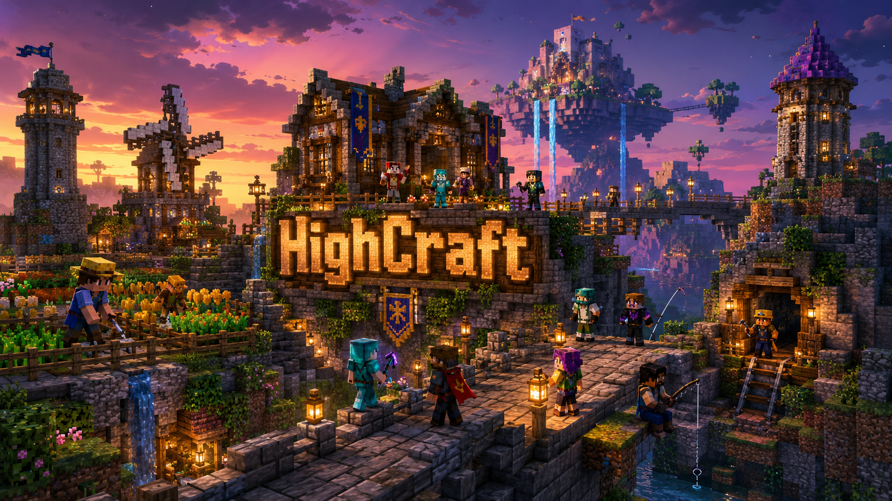
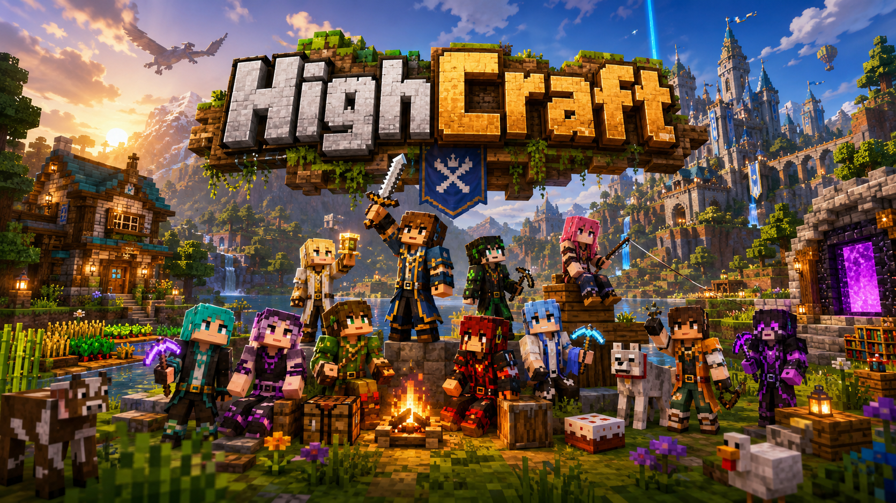
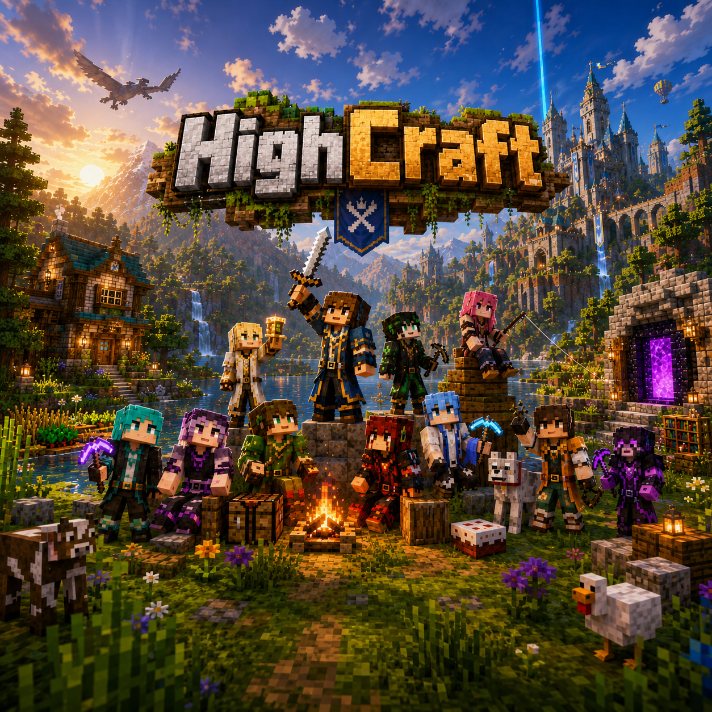
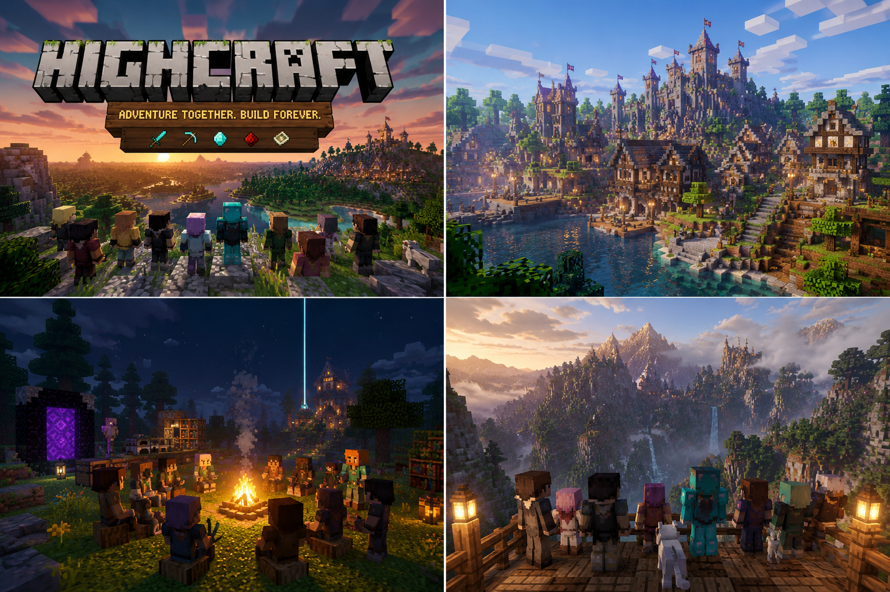
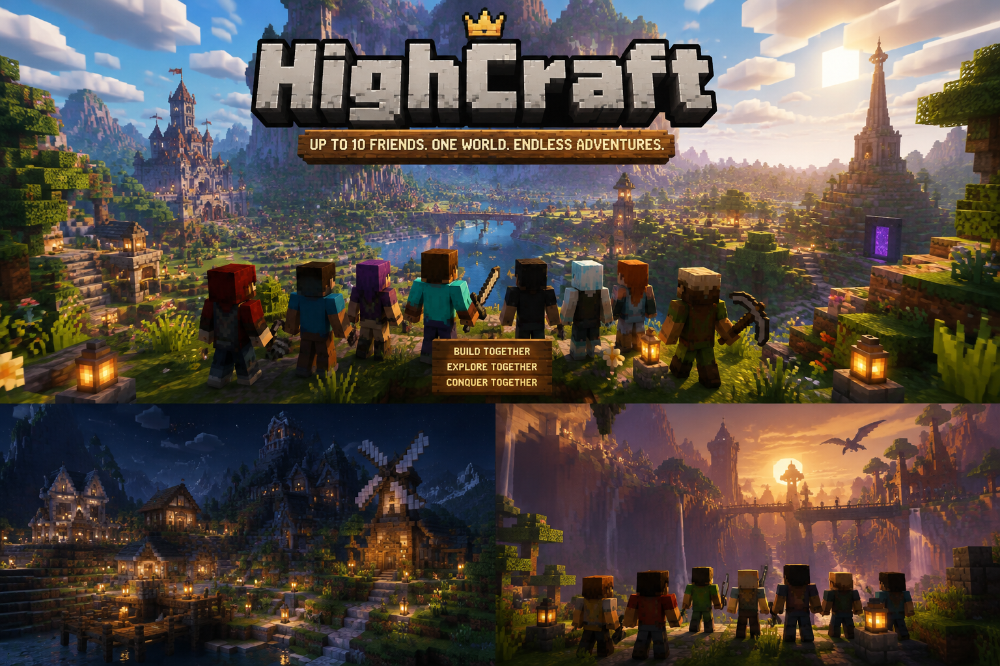
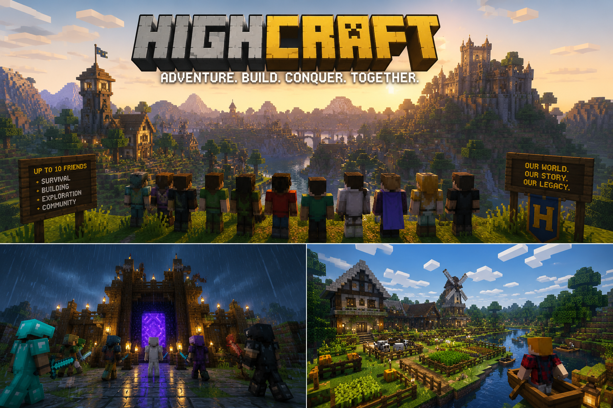
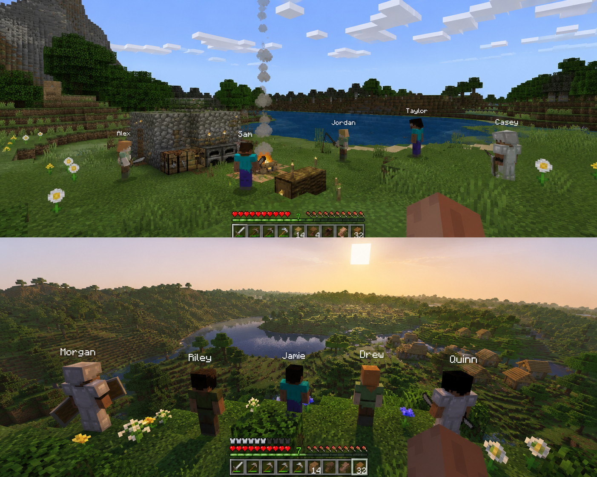
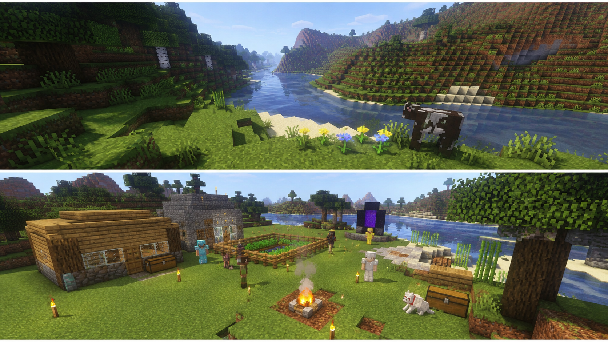

Season One is live
The Boys Arrive — first night, first settlement, first bad decisions.

One Minecraft world. A bunch of friends. No speedrunning — just towns, kingdoms, stupid infrastructure, and a history only this crew could make.
HighCraft is a long-term Minecraft series and community world. We build towns, establish kingdoms, explore, start businesses, fight bosses, and slowly turn a random seed into our own lore — with Otters MC Studios projects running alongside.

The Boys Arrive — first night, first settlement, first bad decisions.

Up to 10 friends. One shared world. Endless excuses to log on.
Promo frames and early world captures — castles, camps, overlooks, and the kind of places the boys will ruin beautifully.





HighCraft uses a loose curriculum to keep the world moving without scripting the outcome. The project also lives alongside the Minecraft mods, server software, tools, and voxel experiments built under Otters MC Studios.
Start with a tiny camp and gradually develop towns, roads, farms, industries, kingdoms, ports, monuments, and megaprojects.
Expeditions send the group into caves, ancient cities, oceans, distant biomes, the Nether, the End, and whatever horrible idea somebody suggests next.
Custom server tools, Fabric mods, companion apps, texture editors, and experiments all live in the same wider ecosystem.
Minecraft is bigger than the world itself. These are the server tools, mods, utilities, and experiments built under the same studio umbrella.
Project cards are generated from the projects array at the
bottom of this file. Add or edit one object there and the gallery updates automatically.
These are not presented as mandatory dependencies. They are the strongest candidates from the studio for supporting, expanding, or documenting HighCraft.
A private, unnamed in-house manager for the HighCraft world. Not a public product — just the box that keeps the server running.
Economy, jobs, wallets, and payouts that line up with the civilization theme.
A phone-based overhead map companion using a local HTTP API over LAN.
Auto-fishing, HUD overlays, stats, and achievements for long sessions on the shared world.
Turns /help into a searchable command browser instead of a wall of text.
Enlarges the vanilla Advancements screen so the world's progress is actually readable.
Chapters guide progression but do not determine exactly how we play them. Each stage creates new reasons to work together, compete, explore, trade, or cause problems.
Food, shelter, iron, beds, and the original Boys' Lodge.
Permanent homes, public spaces, and the first town.
Mining operations, equipment, and resource competition.
Roads, bridges, railways, ports, and transportation.
Businesses, trading, shops, jobs, and questionable capitalism.
Fortresses, bastions, and the HighCraft Nether network.
Enchantments, potions, redstone, automation, and custom tools.
Kingdoms, politics, exploration, the End, Elytra, and megaprojects.
Replace the placeholders with usernames, skins, specialties, quotes, deaths, businesses, kingdoms, and whatever each player becomes infamous for.
The best HighCraft moments should not be planned. The curriculum, tools, and projects exist to create opportunities for something memorable to happen.
Progression is part of the story. We do not need Elytra twelve minutes after spawning.
Today's horrible starter shack becomes tomorrow's historical landmark.
Roads, businesses, arenas, towns, and events make the server feel alive.
Not everybody needs to be the miner, builder, engineer, explorer, and merchant.
Screenshots, books, graves, museums, and monuments turn accidents into lore.
The point is not perfect efficiency. The point is creating a world nobody else could have made.
Eventually the map should be covered in towns, abandoned mines, kingdoms, monuments, graveyards, railways, custom projects, giant builds, and stories that only make sense to the people who were there.